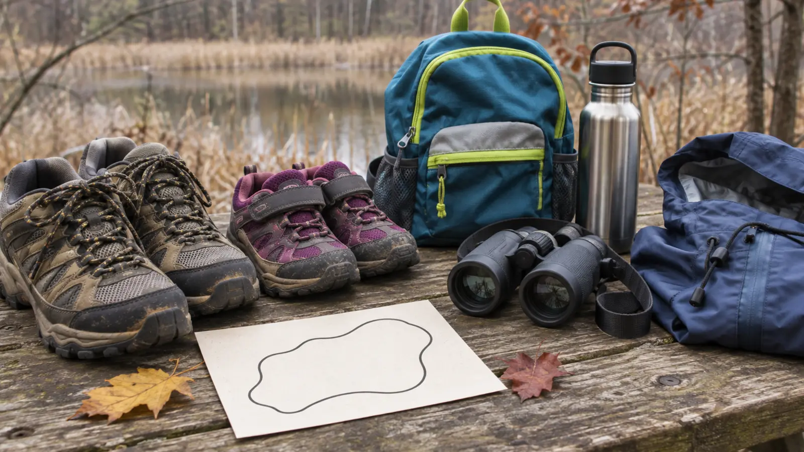

CENTRAL NEW YORK · BOARDWALK · AUTHORITY-EXPANSION
Labrador Hollow With Kids: Walk the 0.4-Mile Boardwalk, Then Choose One Add-On
Use the short pond boardwalk as the guaranteed win. Add Tinker Falls or the fishing pier only if the weather, daylight and family energy still say yes.

Original AI-assisted conceptual planning image. It does not depict Labrador Hollow, its boardwalk, Tinker Falls, the fishing pier, current access, weather or trail conditions.
Check before leaving: Labrador Hollow Unique Area is open year-round and DEC currently charges no entrance fee. Conditions, parking, the seasonal portable toilet, hunting zones and closures can change. Read the official DEC page, open the official DEC map, and call DEC Region 7 in Cortland at 607-753-3095 when a particular access feature matters. This is a planning guide, not a live conditions report.
The blunt version
Do not build this day around doing everything. Labrador Hollow has a pond boardwalk, a separate Tinker Falls trailhead, a separate fishing-and-viewing pier, and miles of additional trails. Those are different stops with different parking. For a school-age family, the clean plan is the 0.4-mile boardwalk loop first, then exactly one optional add-on.
From Syracuse, allow roughly 30–40 minutes each way as an editorial driving estimate, then verify the current route and road conditions. Budget 60–90 minutes for the boardwalk-only visit or about two hours with one add-on. There are no concessions. Bring water and a snack, and handle the bathroom question before leaving Tully because DEC lists only a seasonal portable toilet at the boardwalk parking area.
The finishable plan
1. Boardwalk first
Park at the boardwalk lot off Labrador Crossroad. DEC describes a 0.4-mile loop with a firm boardwalk surface, at least five feet of width and a maximum slope of five percent. That makes it the clearest short-route option, but weather, leaves, ice and maintenance still control the real experience.
2. Stop and score it
At the car, ask three questions: Are feet dry? Is everyone still curious? Is there at least an hour of daylight and patience left? Three yes answers earn one add-on. Anything else means snack, bathroom check and home.
3A. Tinker Falls
Drive to the separate Tinker Falls parking area. DEC describes the trail as 0.25 mile one way, compacted stone, at least eight feet wide and no steeper than five percent. Stay on the official route and out from under ice or rock hazards.
3B. Fishing pier
For a quieter second stop, use the Markham Hollow Road parking area. DEC says the accessible fishing-and-viewing pier is about 230 feet from parking. It is a look-and-listen stop, not permission to swim.
Parking is the part people get wrong
Save the DEC map before the drive. The boardwalk, waterfall and pier do not share one trailhead. Put the exact parking point for the chosen first stop into navigation, and do not improvise roadside parking when a lot is full or snowed in. Keep the access lane and turnaround clear. A family plan should reduce confusion, not add a dangerous shoulder crossing.
At the boardwalk, give kids a simple observation job: find three wetland textures, two bird sounds and one sign of seasonal change. Keep binoculars on a wrist strap and use the family binocular fit guide if the view will not merge for a child. Nobody steps off the boardwalk to improve a sighting.
Weather, winter and water rules
Boardwalks can be slick with rain, frost, leaves and packed snow. The waterfall area can develop falling ice and unstable winter surfaces. DEC’s winter hiking guidance says to check conditions, carry appropriate traction when the route requires it, turn back when conditions exceed the group’s skills, and avoid walking on frozen water unless ice safety is confirmed. A family guide cannot tell you that today’s ice is safe.
Use the family weather cutoff plan before departure. Cancel for thunder, flooding, active high-wind hazards or road conditions the driver does not want. In marginal weather, keep the boardwalk-only plan. In cold weather, carry dry gloves and an extra layer in the vehicle. If a child gets cold, wet or quiet, the route is over.
Food, restrooms, pets and access
Food: no concession stand. Pack a compact snack and carry every wrapper out. Tully is the practical food-and-fuel stop.
Restroom: DEC lists a portable toilet at the boardwalk parking area during the warmer season. Treat it as unavailable until verified.
Pets: DEC says domestic animals must be under control. Bring a short leash, water and waste bags; crowded boardwalk passing is not the place for a long line.
Accessibility: DEC publishes surface, slope and width details for the boardwalk, Tinker Falls trail and pier approach. Ask DEC about current barriers, snow removal, parking and toilet access if any feature is essential.
Swimming and boating: swimming and motorized boats are prohibited. Fishing follows current New York rules.
Hunting-zone boundary
DEC divides the property into two zones. Zone 1 includes the pond, boardwalk, Tinker Falls and most trails and is closed to hunting and trapping. Zone 2 allows hunting and trapping under current state regulations. Use the current official map rather than assuming every trail has the same rule. During open seasons, wear visible outer layers and stay on the chosen route.
Pack this, not the garage
Water, one snack per person and a small trash bag.
Weather layer, dry gloves in cold months and footwear with useful traction.
Downloaded DEC map and a charged phone; reception is not guaranteed.
Binoculars or a small notebook, not a pile of entertainment.
Any necessary medications and the family contact card.
The low-energy version is the boardwalk plus a snack in the parked car. The bad-weather backup is a short indoor stop from the three-anchor museum system; do not force the waterfall because you already drove south. If the boardwalk lot is full, the surface looks unsafe or anyone needs a reliable restroom, leave. A good family day is not measured by completing the map.
Who should skip it today
Skip when the family needs guaranteed indoor restrooms, staffed interpretation, food on site, a plowed winter surface or a single parking lot serving every feature. Also skip when anyone is likely to treat the pond or waterfall edge as a play zone. Labrador Hollow works best for families willing to choose one small nature objective and stop while it is still fun.
Primary sources and update note
Verified November 2, 2026 against the New York State Department of Environmental Conservation’s Labrador Hollow property page, official property map and winter hiking guidance. Drive time is an editorial planning estimate, not an official travel time. Recheck the linked DEC sources immediately before travel.
MAKE THE WEEK COUNT
Useful beats heroic.
Build the plan your family can finish well, then leave enough energy for the next part of the day.